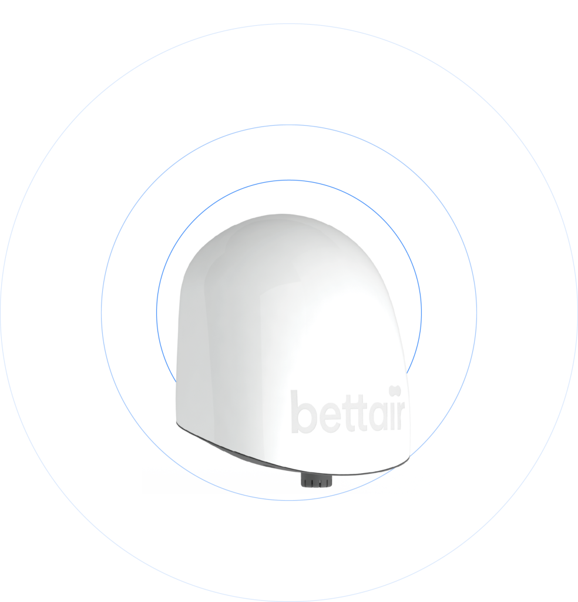
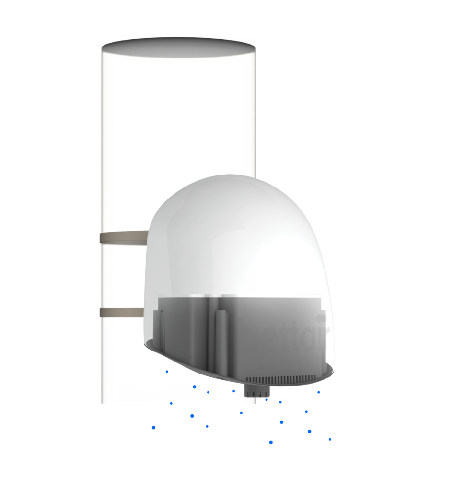

Bettair® is a novel smart-city platform providing highly efficient, large-scale air pollution mapping — giving cities the insights they need to protect public health and build cleaner environments.


The Device
The Bettair® node is a compact, dome-shaped air quality sensor hub engineered for urban outdoor deployment. Its patented sensing cartridge design lets you replace all sensors easily when needed — with no specialist tools and no on-site calibration required.
Sensors & Measurements
From fine particulates to trace gases, Bettair® nodes cover the full spectrum of urban air quality indicators, alongside key environmental parameters.
| Variable | Range | Limit of Detection | Resolution | Precision | Unit |
|---|---|---|---|---|---|
| NO₂ | 0 – 20 ppm | 2 ppb | 0.1 ppb | ± 3 ppb | ppb or µg/m³ |
| O₃ | 0 – 20 ppm | 1 ppb | 0.1 ppb | ± 5 ppb | ppb or µg/m³ |
| NO | 0 – 20 ppm | 2 ppb | 0.1 ppb | ± 4 ppb | ppb or µg/m³ |
| CO | 0 – 500 ppm | 30 ppb | 1 ppb | ± 30 ppb | ppb or µg/m³ |
| SO₂ | 0 – 50 ppm | 10 ppb | 0.1 ppb | ± 15 ppb | ppb or mg/m³ |
| CO₂ | 400 – 10,000 ppm | 400 ppm | 1 ppm | ± 30 ppm | ppm or mg/m³ |
| H₂S | 0 – 50 ppm | 2 ppb | 0.1 ppb | ± 10 ppb | ppm or mg/m³ |
| NH₃ | 0 – 60 ppm | 6 ppb | 0.3 ppb | ± 10 ppb | ppb or µg/m³ |
| VOC | 0 – 100 ppm | 20 ppb | 1 ppb | ± 1 ppm | ppb or mg/m³ |
| CH₄ | 0 – 50,000 ppm | 250 ppb | 10 ppm | ± 250 ppb | ppm or mg/m³ |
| HCl | 0 – 20 ppm | 5 ppb | 0.1 ppb | ± 15 ppb | ppb or mg/m³ |
| PM₁ | 0 – 1,000 µg/m³ | 1 µg/m³ | 1 µg/m³ | ± 2 µg/m³ | µg/m³ |
| PM₂.₅ | 0 – 1,000 µg/m³ | 1 µg/m³ | 1 µg/m³ | ± 2 µg/m³ | µg/m³ |
| PM₁₀ | 0 – 1,000 µg/m³ | 1 µg/m³ | 1 µg/m³ | ± 2 µg/m³ | µg/m³ |
What You Can Do
Whether managing urban health policy, enforcing environmental regulations, or conducting climate research — Bettair® gives you the precise, scalable data you need.
Why It Matters
Outdoor air pollution kills 4.5 million people annually — mostly in cities. Understanding which pollutants affect which organs is the first step to taking action.